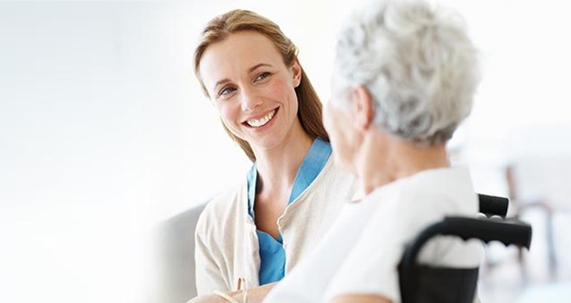

New support enquiries
We take time to understand what kind of companionship or practical support would be most helpful.
Who we are?
Badwi Care and Companionship Service provides personalised, flexible adult companionship and practical home support for people who need help but want to remain independent and comfortable in their own homes.
We spend time getting to know you, your routines and your way of life so we can provide relevant assistance and support. Our services are tailored to your specific needs, whether that means a friendly visit once or twice a week, regular practical help, support after hospital discharge, or reassuring check-ins for family members.
No support arrangement is ever exactly the same, because each person we support is different.

Our services
We provide clear, practical help focused on companionship, confidence and independence.
Friendly visits for conversation, activities, emotional wellbeing and reducing loneliness.

Reassuring company while family carers rest, work, attend appointments or take time out.

Support with board games, cards, hobbies, conversation and confidence to stay socially connected.

Help preparing food, light meals, drinks and everyday kitchen routines.
Light cleaning, tidying and household tasks that help the home feel comfortable.

Support with shopping lists, local shops, groceries and carrying light bags.
Someone reliable to accompany clients to appointments and help with confidence.

Support to get out, attend social activities, visit local places and stay connected.

Practical help settling back home after hospital, with meals, shopping and wellbeing checks.

Friendly check-ins to make sure someone is safe, comfortable and connected.
Helpful updates and reassurance for relatives who cannot always be nearby.
Further Information
Badwi Care and Companionship Service provides practical, non-regulated support that is easy to understand and simple to arrange. We focus on friendly visits, clear communication and support that fits around daily life.
We take time to understand what kind of companionship or practical support would be most helpful.
Families can stay informed with clear updates and reliable communication when support is in place.
Support can be arranged around routines, appointments, shopping, activities or time at home.
Our current services focus on companionship, sitting service, domestic help, meals, shopping and wellbeing checks.